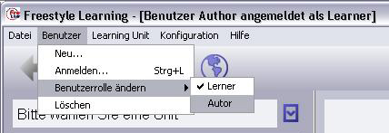

Wenn Sie Freestyle Learning zum ersten mal starten, sind Sie bereits automatisch eingeloggt. Nach Installation der Download-Version (ohne Learning Units) sind Sie in der Autor-Rolle angemeldet, so dass Sie sofort mit dem Erstellen von Learning Units beginnen können. Nach Installation einer CD/DVD-Version (mit bereits erstellten Learning Units) sind Sie in der Lerner-Rolle angemeldet, so dass beim Editiervorgang lediglich Ihre individuelle Sicht auf den Lerninhalt, nicht jedoch die originalen (Autor-) Daten modifiziert werden.
Benutzerrolle wechseln
Wenn Sie die Rolle des aktuellen angemeldeten Benutzers wechseln möchten, wählen Sie im Menü den Eintrag "Benutzer / Benutzerrolle" ändern. Im Menü erscheinen daraufhin die erlaubten Rollen für den aktuellen Benutzer. Sollte der Menüpunkt ausgeblendet sein, sind keine anderen als die aktuelle Rolle erlaubt.

Hinweis: Falls Sie sich unter einer anderen Benutzerkennung anmelden möchten, wählen Sie im Menü "Benutzer / Anmelden". Geben Sie im darauf hin erscheinenden Dialog Benutzernamen und Kennwort ein und drücken Sie "OK". Nähere Informationen zur Benutzer-Anmeldung erhalten sie unter: Login. Eine kurze Anleitung zum Erstellen einer neuen Benutzerkennung findenten sie unter: Benutzerkennung anlegen.
Zurück zur Hauptseite